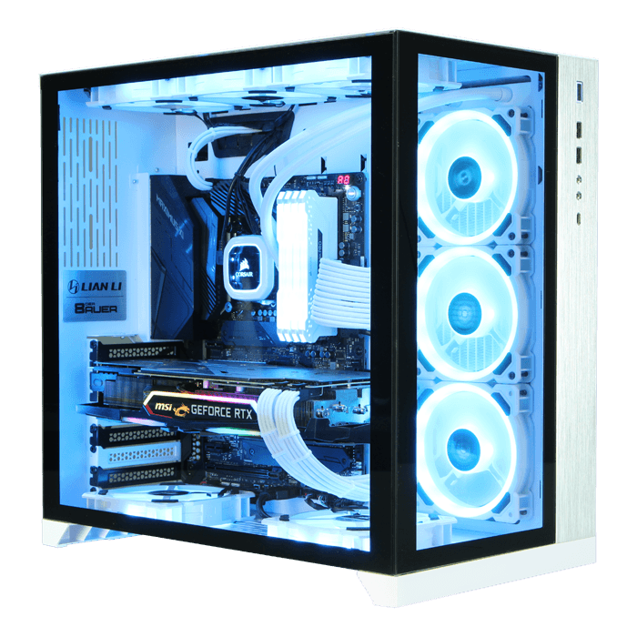

Building A Computer On Your Own
Why Build It Yourself?
It might seem daunting to build your own PC, but the truth is it's actually quite easy.
It only requires buying parts, installing them into the right slots, and hooking them up with cables. It's almost like Lego, but a bit more fiddly, and you'll need a screwdriver for some parts.
There are a ton of videos and other online resources to help you along the way. But if you're still on the fence, here are three very good reasons you should build your next computer from the ground up.
It costs a lot less
To test this theory out, I compared the price of a high-end gaming PC from a well-known brand with good quality equivalent parts with the same specifications from popular sites where you can buy PC parts, like Newegg and Amazon.
The high-end brand-name PC retails at $3,055. Meanwhile, the total for the parts I found on Newegg and Amazon were in the $1,600 range. In other words, you can simply build the PC you want with all the same parts as the brand-name PC but it'll cost about half as much yet perform just as well.
You can pick exactly which parts you want and need
As I was looking through the different options for brand-name PCs you can buy, I noticed there weren't actually that many to choose from. You're limited by what the company offers, basically.
For example, I couldn't opt for less storage with one of the brand-name PCs. I had to get an SSD and regular hard drive combo, with the only other storage options being more expensive. Personally, all I need is one SSD since I have no need for a regular hard drive, yet I'd still be forced to pay for the hard drive if I bought the brand-name PC.
By picking the parts yourself you also know exactly what you're getting, and you're paying for as much as you need. Not more, not less. For brand-name PC's, it's not quite as clear what parts companies use, so you're never really sure whether you're overpaying for something you don't need, or if you're getting parts that don't do what you want.
It's extremely satisfying
It is extremely satisfying to put hand-picked parts together and run the Windows operating system, as well as apps and games. You can look at your final product and say "I made that," not some company like Samsung, Acer, or HP.
You could even give your PC some tasty marketing phrases, like "hand-made" and "small batch," as there's no computer out there that's exactly like yours. Well, maybe a few are pretty similar, but at least it didn't come off a factory line where thousands of other PCs with the exact same look and specs were made.
One of the worst feelings of owning a computer is when something goes wrong — it doesn't boot up, for example — and you can't figure out what's wrong with it. It might have been a defective part coming off the production line, and you were the unlucky person to receive that particular part. Sure, you can find a popular online marketplace to buy a new part to replace the defective one, but then you need to wait for it to arrive in the mail.
When you build your own PC, it's easier to see what's gone wrong because you become familiar with each part. As I show in my guide for building your own high-end PC, my computer wouldn't boot the first time I tried it, but I was able to find the issue, look it up, and find a solution.
Picking The Parts
No matter what your experience level is, you should use PCPartPicker. Not only does it have everything you’ll need to buy, but it lets you build your PC piece by piece right there on the website, making sure all your hardware will play nicely together. They even have a few example builds you can tweak to your liking if you want.
Regardless of what kind of PC you’re building (home office or gaming), the components you need are going to be the same. You’ll need a motherboard, a CPU, storage, memory, a power supply, a case, and a monitor. The only thing you might not need if you're mostly using this PC for home office tasks is a GPU, but it's necessary for photo or video editing and gaming. That’s a lot of stuff. Here’s a little breakdown of what each component does, and some hardware recommendations.
Motherboard
Every other component plugs into this circuit board. It’s the highway they use to communicate and collaborate. They come in different sizes and configurations, and each one looks a little different, but they all fill the same function.
Suggested Hardware
- MSI MPG Z490: This one is great for Intel processors.
- ASUS ROG Strix B450-F: If you are buying an AMD processor (more on that below), get this one.
Processor
This is the brain of your computer. It sockets directly into the motherboard, and it’s the single most important component of your PC. But that doesn’t mean it has to be the most expensive. We’ll get to that later. If the CPU doesn't mention including thermal paste, make sure to get some too.

Suggested Hardware
- Intel Core i7-10700K 8-Core 3.8GHz: This is an excellent choice for high-end systems.
- AMD Ryzen 5 3400G 4-Core 3.7GHz: AMD's processor is a solid pick if you're on a tighter budget.
Graphics Card
If you’re planning on playing games on this PC, you’ll need a graphics processing unit, or GPU (also called a graphics card). This is a specialized processor that’s designed and optimized for handling primarily visual data like the graphics in games. It's also used in video and photo editing, and other graphics-intensive tasks.
Suggested Hardware
- MSI GeForce GTX 1660: This one is a good pick for gaming on a budget.
- MSI Radeon RX 570: The RX 570 is getting a little long in the tooth, but it's a great buy for AMD fans.
- MSI GeForce RTX 2060: If you're looking to get into high-end gaming, this card strikes a good balance between power and price.
Storage
This is your PC’s walk-in closet. This is where you store all your files, your games, your movies, your documents, your photos, your everything. You can always add more storage later if you need it.
Suggested Hardware
- WD Blue 1 TB Internal SSD: It's quick, with plenty of storage space.
Memory
You’ll see a lot of the same terms when you’re looking at memory and storage, but they’re very different. Memory is more like that one table you toss things on to deal with later. It’s scratch paper; it’s short-term. It’s very important, though, because software uses memory to cache (temporarily store) data in a place it can be retrieved very quickly.
Suggested Hardware
- G.Skill Ripjaws V Series 32 GB 288-Pin RAM: With this much RAM, you should be pretty well set for everyday tasks and gaming.
Power Supply
Your power supply is a little box that keeps the electricity running to each and every component. It determines how quick and powerful your PC can be. The faster it is, the more power it needs, and you always want to have a little more than you need, just in case.
Suggested Hardware
- EVGA SuperNOVA 750 GA Power Supply: You should always err on the side of having more power than you need, and this unit will provide exactly that.
Case
Your case is just what it sounds like. It’s a metal box. It might be covered in glass panels and etched aluminum, but inside it’s just a big metal box that holds everything together.
Suggested Hardware
- Corsair Obsidian Series ATX Full Tower: There are lots of different kinds of cases out there, some are super small, others are enormous. And your decision will ultimately come down to the design you like as much as anything else. If you're unsure what to get, this one from Corsair is great for your first build.
Operating System
One thing to remember is that when you build a PC, you don't automatically have Windows included. You'll have to buy a license from Microsoft or another vendor and make a USB key to install it.
Putting It Together
We’re not going too far into the weeds here, because the internals of every PC are a little different, but in general, here’s how you should go about putting all these components together.
First, prep yourself a clean workspace. This can be a dining room table, a cleared off desk—just any surface big enough for your case to lay flat on its side, with ample room around it for the rest of your components. You’ll also need a Phillips-head screwdriver that will fit the screws on your case. When you put these parts together, be sure to discharge any static buildup and work on a nonmetallic surface like a wood table. Or you could just assemble the motherboard on top of the cardboard box it comes in.
Most of the components you bought are going to come with instruction manuals; keep them handy. We’re going to start with the motherboard, so open up the instruction manual to the installation page. It can be pretty intimidating—there’s a lot to look at—but think of all this as a big Lego set. Each piece fits into each other piece. For the motherboard, your first job is going to be seating your CPU.
Installing Your CPU
Depending on what kind of CPU you purchased (Intel or AMD), the chip will have either little prongs on one side (don’t touch them) or little golden contacts on one side (don’t touch them). Seriously, don’t touch that side of your chip. Oils from your fingertips can damage the contacts, or you might bend a pin. Do either one and your processor becomes nothing more than an expensive hunk of silicon.
Seating your processor is pretty easy. First, double-check your motherboard’s instructions and make sure you’ve unlocked the processor socket. It’ll be a big square with a bunch of little holes (or contacts), with a lever or button beside it. Your motherboard’s instructions will say explicitly how to unlock the socket so you can put your processor in without any issues.
Once you’ve confirmed that it’s unlocked and ready, just find which corner of your processor has a little golden triangle and line it up with the same symbol on your motherboard’s processor socket. Gently lower the processor into the socket, then gently flip the latch or locking mechanism. You shouldn’t have to fight it. If you have to press really hard, double-check that the processor is socketed correctly.
Next, you’re going to need your thermal paste. That little tiny plastic syringe of silvery goo is very important for this next step. Now that your processor is seated, take a look at the shiny square of silicon in the center of it. That’s where your heat sink is going to sit. Your processor came with a heat sink, and on one side of it, you’ll see a copper circle. You’re going to be putting the heat sink directly on top of the processor after we apply the thermal paste, with the silicone square and the copper circle lining up perfectly.
Go ahead and carefully squeeze a tiny ball (no bigger than a pea) of thermal paste onto the silicon square on your processor. You’ll want it as close to the center as you can get.
Now line up your heat sink with the screws surrounding your processor, and gently lower it into place. You’re gonna squish the thermal paste, and the goal here is to create a thin layer covering the back of your processor. It’s OK if it oozes a little bit, but if it oozes out and over the edge of the processor, you used too much. Get some isopropyl alcohol, dab it on a lint-free wipe, and wipe the processor and heat sink. Wait till they’re thoroughly dry and try again.
If it looks all right, screw your heat sink into place. Flip back to your motherboard instruction book and find the right place near the processor socket to plug in your heat sink’s cooling fan. It should be very close to your processor socket. Once you’ve found it, plug it in and congratulations, you just installed a CPU. This was the hardest part and it’s over, good job.
Installing Your Motherboard and Power Supply
The rest of this is formulaic. Let’s start by putting your motherboard into your case. Consult your motherboard’s instructions, line up the screw holes in the case with the ones on your motherboard, and get to work.
Next, you’ll want to install your power supply. There should be a spot for it near the top or bottom of the case, a big square spot that will fit your supply perfectly. If you’re having trouble finding it, look at the back of your case: There’ll be a big empty square. That’s where the power supply goes (and where you’ll plug in your PC when you’re all done). Once you've found its home, slot it in and screw it into place.
Make sure all the snakey cables coming out of the power supply will reach your motherboard with room to spare. Don’t plug anything in yet, we’re going to come back to the power supply in a bit.
Installing Your Graphics Card
Your GPU is going to be pretty big. Even a modestly powerful GPU like the GTX 1060 is large compared to your other components. That means how it fits into your case is important. Once you put your GPU in there, space is going to start getting tight.
Flip open your motherboard’s instruction book again and look for a PCIe slot. It’s going to be a horizontal slot with a little plastic latch beside it, near the middle or bottom of your motherboard. That’s where the GPU plugs in. All you need to do is identify the back of your GPU (the side with the HDMI and DisplayPorts), line that up with the back of your case, and push the GPU into the horizontal slot. It should lock into place easily enough, and if it doesn’t, make sure you’re inserting it correctly.
Find another one of those tiny little screws and fasten your GPU to the case. There’s a little spot for that on the same piece of metal with the HDMI ports. It should be easy to find.
Now, take a look at the cables coming out of your power supply. There should be a few that look like they could fit into the square (or rectangular) socket on the side of your GPU. It should look like six or eight little holes in a rectangle shape. If you’re having trouble, take a look at this video from hardware manufacturer Asus. Some of the specifics will be different, but it’s a great look at how to install a GPU.
Installing Your Storage and Memory
Memory is maybe the easiest thing to install. See those vertical little sockets beside the CPU? Line up your sticks of RAM and slot them in, starting from the left-hand slot. They’ll lock into place once you’ve seated them properly. If you have two sticks of RAM, make sure to skip a slot between them. Your motherboard manual should say which slots to use.
For your hard drive or solid-state drive, find an empty bay in the front-facing part of your case. Slide your drive in and screw it into place like we did with the power supply.
If you have an M.2 drive (a tiny SSD about the size of a stick of gum), there should be a place on the motherboard where you slot it in directly. Check out your motherboard’s manual to see where the M.2 slot is.
Ribbon Cables
The motherboard needs to be hooked into all your devices. The power supply unit I used in this build is what's called fully modular, which means that you can select the cables you need and leave the rest off to eliminate clutter. Otherwise, power supplies have a ton of cables, and you'll have to deal with the unused power connections dangling inside your case. You'll need to connect the PSU to the SSD and the motherboard.
You also need to plug the motherboard into your case—the power buttons, audio plugs, and USB ports on the front of your case. There are special headers for each kind of plug scattered around the board, so you'll want to check your manual for the location and function of each grouping of pins. These tiny pins need to be plugged in a certain way, and they're unbelievably minuscule. There's also a hookup for the case's fan—in this case I used, there was one header on the motherboard but three fans installed. Then there's the SATA cable for your SSD, which plugs into the motherboard.
This part really depends on the hardware you purchased, so consult the manuals for each component to ensure you've plugged it into your motherboard and the power supply correctly.
Installing The OS
The final stage of your build is a simple one: Hit your power button. If the PC whirs to life, you probably put it together perfectly! If it doesn't though, don't despair. There are a lot of potential problems that could cause a PC to fail to boot up for the first time. Youtube has a ton of videos covering any problem you may run into, so if you're not able to boot your PC, find a video covering your issue and retrace your steps. There's also a chance you could have received faulty components. Youtube again comes in clutch with helping to diagnose your issues.
If it started up just fine though, the next step is super easy: Turn it off. Remember that Windows flash drive you made earlier? Plug it into the PC and boot it up again. If you set it up right, it should just do its thing and get started. You might need to open your BIOS (check your motherboard's manual for how to do that) and set the USB drive to be a "boot device" first, though.
You Did It!
Congratulations on building your first PC. It's a bit of a pain, but it's a great way to spend an afternoon. Or a couple of days, depending on how many unforeseen headaches you run into. And now that we're all stuck inside, you can use your PC to help you spend all those hours productively (or just grinding out loot in Warframe).